zooaszoo.comTechnical BreakdownCode Download3D files Download
Creating an animated character with Maya and Mixamo
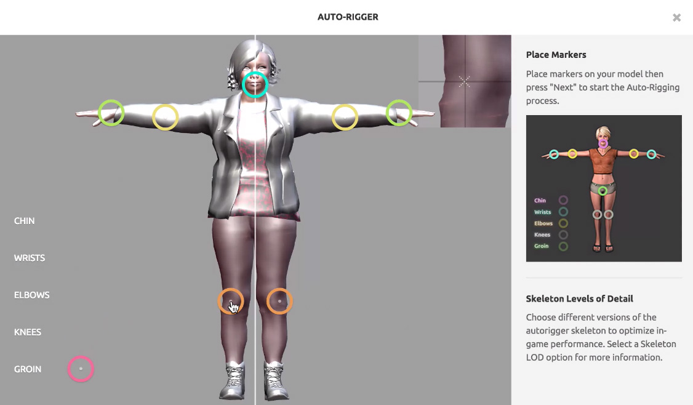
First create an account at https://www.mixamo.com
I want to walk us through hho to make a charachter to animat in Mixamo. The final file is called person_final.mb
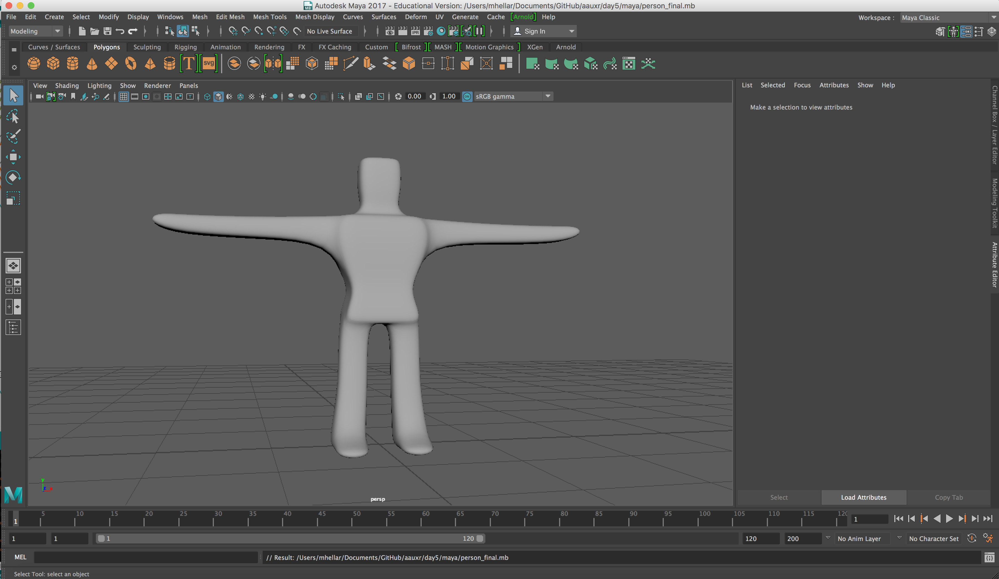
Open Maya and create a cube, set the subdivisions w/h/d to 4
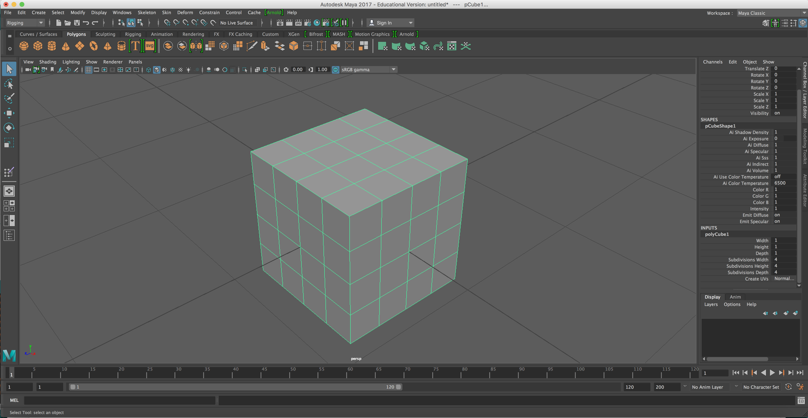
Open Maya and create a cube, set the subdivisions w/h/d to 4
Right click to select faces.
Use shift click to choose multiple faces
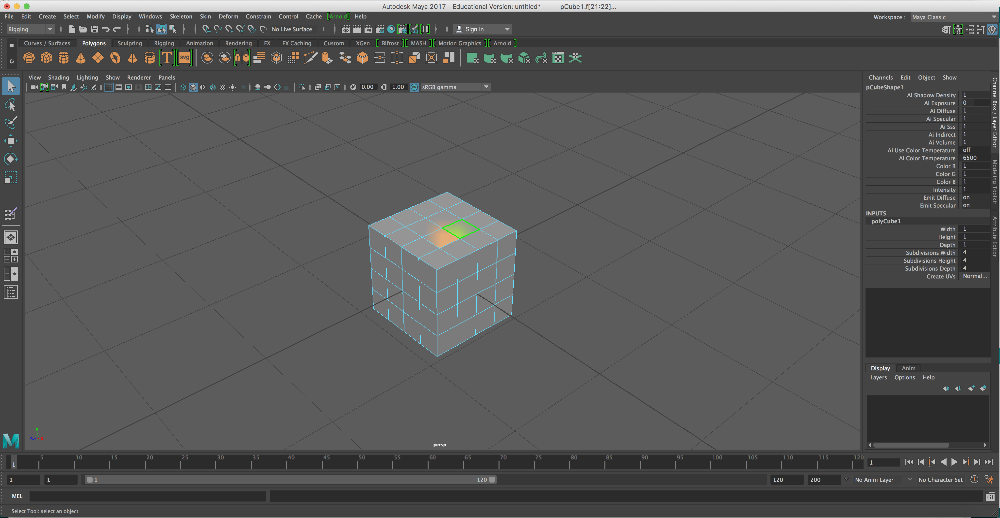
Use ctrl+e to extrude
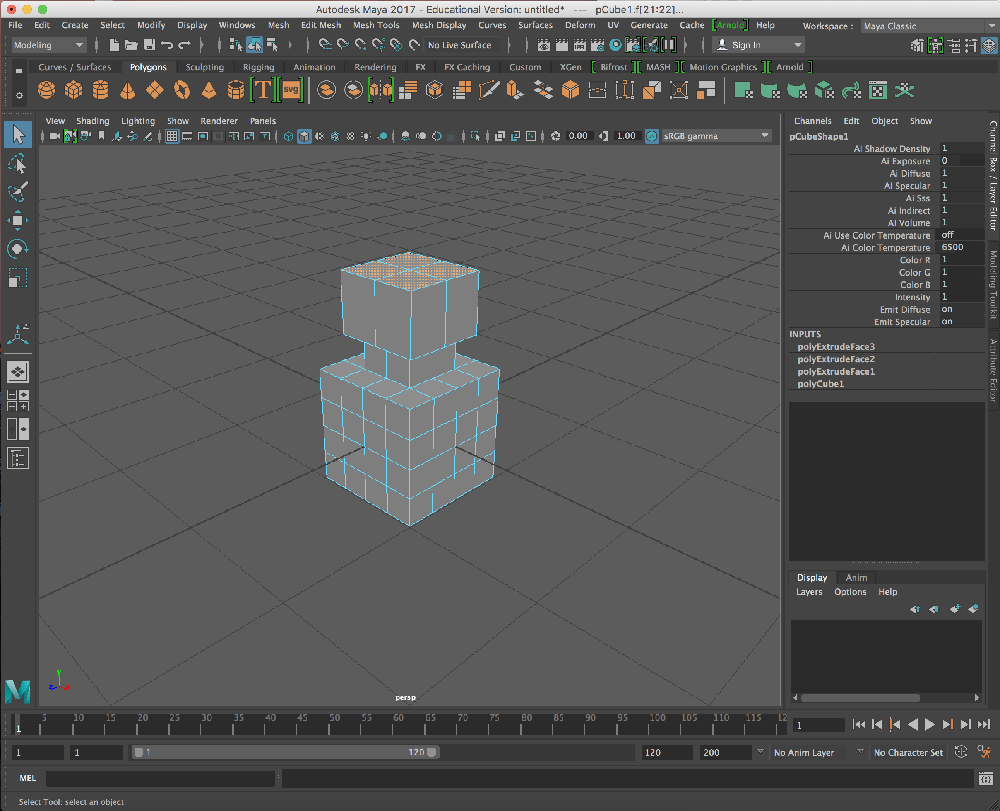
Keep working the geometry to biuld out a figure in a t-pose
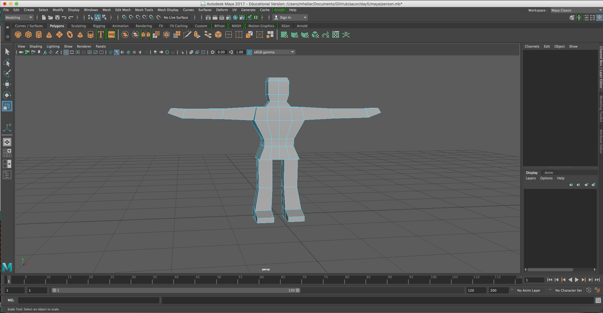
Hit the 3 key to do a smooth preview. The select Modify>Convert>Smooth Mesh Preview to Polygons to smooth the geometry
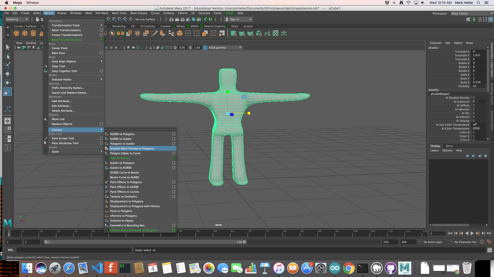
Export as a FBX file, Under FBX file format choose FBX 2013
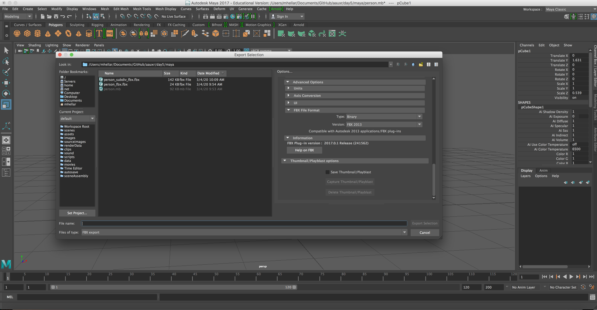
Let's process it in Mixamo
Export the file from Mixamo and bring it back into Maya. Select Display>Animation>Joint Size
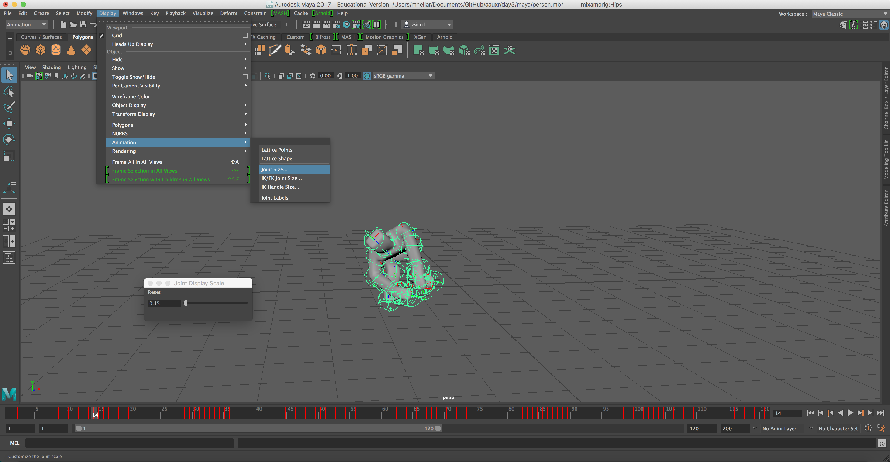
We can add other geometry and attach it to the joints by selecting the geometry and then the joing and hit 'P' to parent
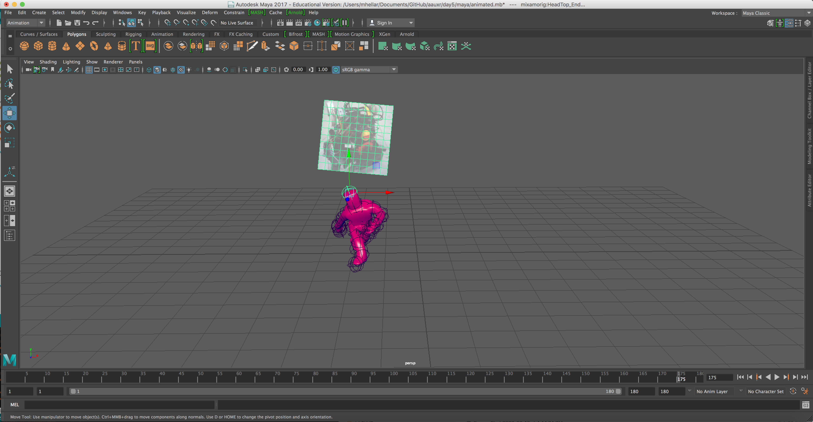
Export as a FBX file, Under FBX file format choose FBX 2013
Download the tool FBX2glTF-darwin-x64 and place it on the desktop.
Due to OSX security we have to do a bit of set up. Right click it and choose open. It will show some junk just close it.
Open the terminal
type 'cd Desktop'
next type 'sudo chmod +x FBX2glTF-darwin-x64'
you only have to do this once, it make the program executable
to convert the file type '/Users/mhellar/Desktop/FBX2glTF-darwin-x64 PATH TO YOUR FILE
Let me demonstrate
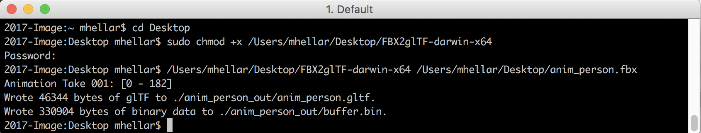
There's a folder in the code called anim_template. Can you import your animation into it. I will come around and help.
Animation Timeline Basics
Blend Shapes
Blend Shapes
Create some animations add them to a scene. I will come around and help you. Have a look at anim_template2 it combines the randomizer and entity generator code we used last week.
Taking a screenshot:
To take a 360° (equirectangular) screenshot, press ctrl + alt + shift + s on the keyboard.
To take a normal (perspective) screenshot, press ctrl + alt + s on the keyboard.
Components of A-Frame’s entity-component framework are JavaScript modules that can be mixed, matched,
and composed onto entities
to build appearance, behavior, and functionality. We can register component in JavaScript and and add it
to an a-entity tag. Components are configurable, reusable, and shareable. Most code in an A-Frame
application should live within components.
You use the AFRAME.registerComponent() function to register a component, do this before
Have a look at comp.html
You can also define an AFRAME.registerComponent() in a seperate file
Have a look at the content of the template folder
Default functions of a component
Inside the comp_template folder, look at the file mycomponent.js
This is a boilerplate that show all the built in functions that a-frame gives us
Today we will start with init() which is called once when the component is first plugged into
its
entity.
We’ll go over examples on writing components. The examples will do mostly trivial things at first but
will will build up
in complexity as we go.
Let's look at the code in 15.html
After the entity is attached and initialized, it will initialize our hello-world component. The
wonderful thing about components
is that they are called only after the entity is ready.
Defining Properties with the Schema
The schema defines the properties of its component. As an analogy, if we think of a component as
a function, then a component’s properties are like its function arguments.
Have a look at 16.html and try uncommenting line 33
Lets look at the Component API reference to see the schema type available
We can add an element to the scene using document.createElement(),setAttribute() and
.appendChild()
Have a look at 17.html
In 18.html we combine the last lesson with multiple schema propeties and entities
Let's take a look
Let's take a look at Lesson 19.html, in this example we append the animation atrribute
The Audio
Analyzer Component
Audio Reactivity
Let's look at curve3/index.html this is a template to get started with the Audio Analyzer Component
Shader Materials, Shaders are small graphics programs that run on the graphics card.
Let's look at shader/index.html
Writing shaders from scratch is a bit tricky but there is a site called https://shaderfrog.com/,
where we can start playing around with them export them for use in our scene. Create an account to
begin.
We will use the https://github.com/msj121/aframeFrogShaders
addon to use the exported shader as a material in our scene.